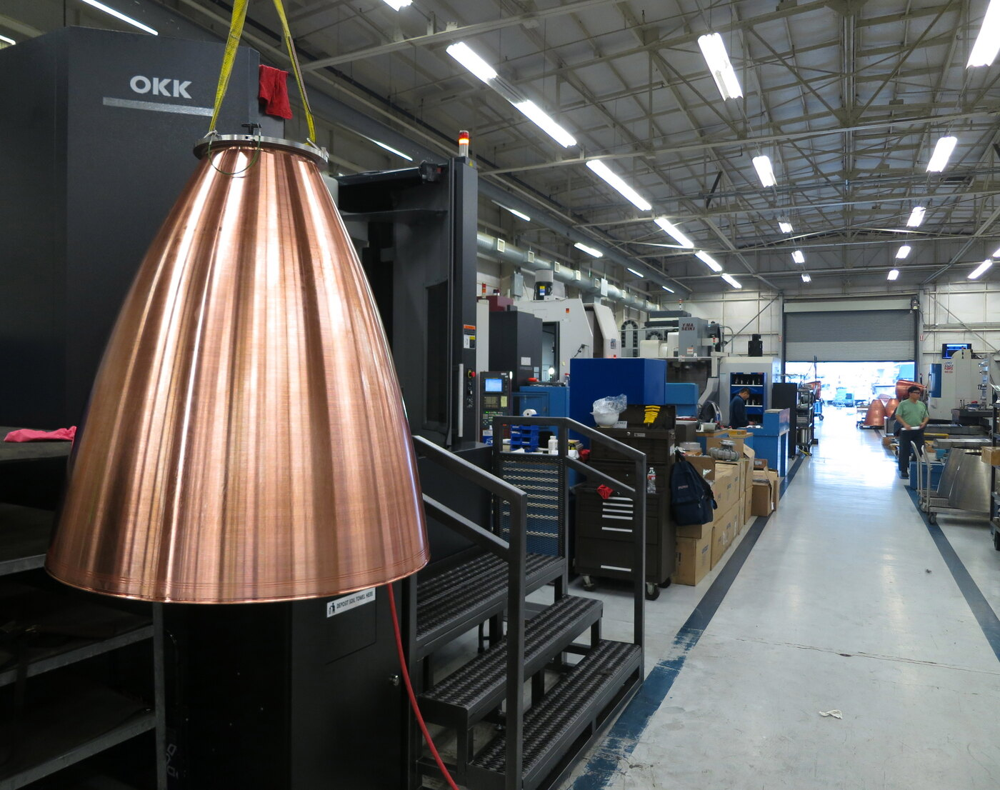

05 / BEHIND THE MISSION
Made for the curious.
An independent, student-built guide to the technology and stories that take us beyond Earth.

REAL ENGINEERING. ENDLESS CURIOSITY.THE IDEA
Space is complex.
Curiosity is simple.
Mission Hub makes rocket engineering and spaceflight history easier to explore. Meet the vehicles, connect the milestones, and use the Launch Lab to work through your own mission idea.
This endterm continues the same SpaceX Mission Hub topic and six core pages from the midterm. It adds a photographic orbital menu, searchable mission archive, vehicle comparison, validated mission simulator, and space quiz.
This is an educational project, not an official SpaceX or NASA product. Mission budgets and capacity adjustments in the Launch Lab are fictional teaching models. The historical archive covers selected events from 2008–2024.
Meet the sources ↗BEFORE YOU LIFT OFF
A few things
you might wonder.
A good journey starts with a good question.
Mission Hub is an independent student project continuing our midterm website. It explains SpaceX technology and history using credited NASA, ESA, and SpaceX imagery.
The Launch Lab is an educational simulator. It calculates a fictional planning budget and creates a mission brief. It does not place orders, send emails, or reserve a real flight.
Meet the four vehicle families in The Fleet, search the mission archive, then use what you learn to design a mission in the Launch Lab.
WITH CREDIT, AND CURIOSITY
The people behind the pixels.
Photography, artwork, and the sources behind this project.
Design & implementation: original page layouts, styling, and educational interactions created with assistance from OpenAI Codex. No downloaded website template was used.
Rocket cutout: the home menu uses the supplied Falcon Heavy demonstration-launch photograph by SpaceX / Official SpaceX Photos, with AI-assisted background removal using OpenAI’s image tool. The original photo is licensed under CC BY-NC 2.0. Source record · Background-removal prompt.
Libraries: Bootstrap 5.3.3 (form components, MIT) and jQuery 3.7.1 (accordion, gallery transitions, smooth scrolling, and success animation, MIT). Type: Space Grotesk and DM Mono (SIL Open Font License).
Research: the supplied midterm and image collection documentation, SpaceX vehicle documentation and NASA Commercial Crew resources. Individual research links are provided in the mission archive.
Photography & visualizations
Each image is credited with its creator, original source, and usage terms. Concept artwork is labeled.